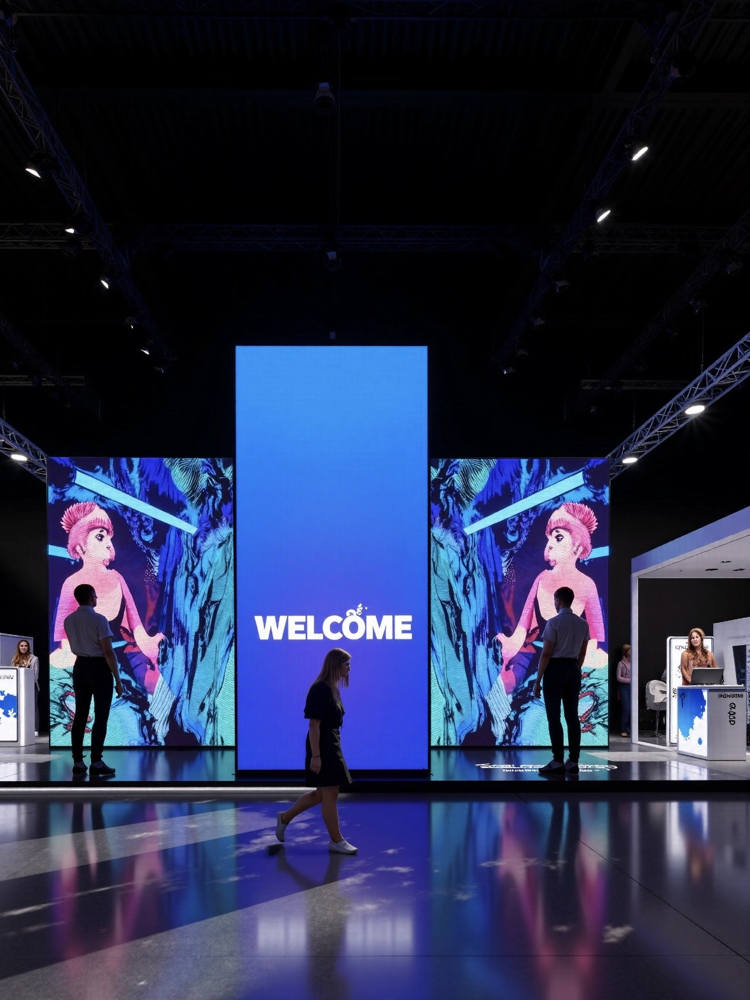

When a building becomes a landmark, its surface becomes a canvas. Landmark LED installations turn façades, bridges, towers, and monuments into media that can change with a season, a campaign, or a city celebration. These are the most demanding projects in the display industry, because the technology must disappear into the architecture while performing flawlessly for years.
Cities and developers use media façades as identity. A distinctive illuminated building draws visitors, anchors a district, and gives a place a recognizable image at night. Landmark installations are commissioned for civic buildings, commercial towers, stadiums, bridges, and cultural venues, and they are usually expected to represent the city as much as they serve the owner. That raises the stakes and the scrutiny on every design decision.
Two forces now drive the market. On the media side, transparent and fine-pitch LED lets a façade carry content without blacking out the windows behind it, so an owner keeps daylight and views while gaining a display surface. On the architectural side, LED is increasingly integrated as a lighting element, with a building's lines, edges, and structure animated rather than covered by a single rectangular screen.
The engineering challenge is severe. A façade display faces wind load at height, a wide temperature range, water, and vibration, and it must be safe to service without closing the building or endangering the public below. Media walls that sit behind glass add another layer, because heat builds up inside the cavity and glare becomes a design constraint for neighbors.
There is a strong regulatory dimension as well. Landmark projects pass through planning, light-pollution, and safety reviews, and they must satisfy electrical and structural codes. A supplier who has not worked on integrated façades will struggle with the documentation these projects demand. The winning installations are those where the display is treated as part of the building from the first design meeting.
Finally, landmark projects are judged over decades, not seasons. An owner choosing a facade display is committing to a surface that will be seen every night for many years, so repairability, spare-part availability, and a control platform that can adopt new content workflows matter as much as the initial brightness. A design that cannot be serviced or updated will age badly, no matter how striking it looks on opening night.
Community acceptance is the other long-term factor. A media facade that respects its neighborhood, dimming late at night and avoiding glare into nearby homes, tends to keep its license and its goodwill, while an installation that ignores those concerns can attract complaints and restrictions. Designing for the surrounding streetscape from the start is what allows a landmark to keep shining year after year.
Transparency is often the deciding specification. A transparent LED film or panel carries content while letting the building's glass show through, which suits office towers, retail podiums, and any façade where daylight and views matter. Pixel density can be tuned to the viewing distance, so a bridge or a tower seen from a distance can use a lower density than a podium viewed from a sidewalk.
Outdoor performance is mandatory. The D-PRO series at IP65 with 8000 nits and above is built for sun, rain, and the temperature range a building scale faces, and its sealed cabinets protect the electronics through years of exposure. Automatic brightness control is essential on a landmark, because a façade bright enough to read by day becomes a glare problem at night if it cannot dim.
Mounting and structure require engineering partnership. Wind load at height, thermal expansion across a long façade, and vibration all shape the mounting design, and the display frame must be coordinated with the building structure rather than added after it is complete. Curved and irregular geometry can be built from modular cabinets, which lets the display follow a building's lines instead of fighting them.
Control is where a media façade becomes a landmark. A central system should schedule content by time of day, respond to a civic event, coordinate multiple surfaces across one building, and dim safely for the community. Integration with the building management system lets the façade respect energy targets and local light-pollution rules, which often decide whether a project is approved in the first place.
Serviceability at height deserves early attention. A facade display should be reachable by the maintenance method the building already uses, whether that is a cradle, a drone inspection, or an internal access route, and modules should be replaceable without scaffolding across a public space. Planning access at the design stage keeps the ongoing cost of ownership predictable and avoids the awkward situation of a display that cannot be repaired cheaply.
Finally, content strategy should be set before the wall is switched on. A landmark needs a library of scenes for civic events, seasons, and everyday viewing, plus a rule for how bright and how fast the animation may run after dark. Owners who define that framework early get a facade that feels considered and calm, rather than one that shouts for attention every night and wears out its welcome with the very public it was built to impress.
Content and structure should be developed together rather than in sequence. When the designers of the building and the designers of the media share an early brief, the facade geometry informs the animation and the animation informs the pixel layout, which is how the most convincing landmark installations come together. Leaving content until after the hardware is fixed tends to produce a display that looks impressive in isolation but never quite belongs to the building.
| Facade Surface | Series | Key Attributes |
|---|---|---|
| Glass office tower | Transparent LED | See-through, tunable pixel density |
| Building edge or line | Modular outdoor | Curved geometry, IP65 sealing |
| Exterior media wall | D-PRO outdoor | 8000+ nits, auto-dim, wind-rated frame |
| Atrium or lobby wall | CV-PRO indoor | Fine pitch, high contrast |
| Bridge or tower | Modular outdoor | Long-distance viewing, low density |
Asia Vision Technology works on integrated architectural projects as well as standalone displays. The product range spans transparent panels for glass façades, fine-pitch indoor walls for atriums and lobbies, and IP65 D-PRO cabinets for exterior surfaces, so a single project can be served with formats chosen for each orientation and viewing distance.
Because modules are small and modular, curved, cylindrical, and complex geometry can be built to follow a building's architecture rather than imposed on it. Panels are rated for 100,000 hours and sealed against weather, which suits a landmark that has to perform reliably every night of the year, and central control supports scheduling, event triggering, and safe dimming for the surrounding community.
Every shipment includes CE, FCC, and RoHS documentation, a 3-year warranty, and a 15-20 working day lead time. Asia Vision supplies the technical documentation that planning, structural, and electrical reviews require, which keeps an integrated façade project moving rather than stalling on compliance questions.
For projects that combine several surfaces, Asia Vision helps specify a coherent system so that the glass facade, the exterior media wall, and the interior atrium share a control platform and a consistent color target. That coherence is what makes a building read as one landmark rather than a collection of unrelated screens, and it simplifies both commissioning and long-term operation.
For this requirement our range covers it directly: the COB EF outdoor series (IP65, 3000 nits) and the D-PRO outdoor series (front maintenance).
Need LED display solutions?
Contact Asia Vision for competitive pricing and specs.
📩 Get a Quote WhatsApp